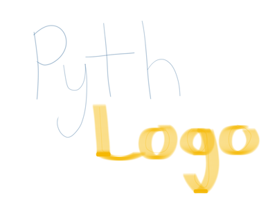

Working with decision makers in Pyth
"The fool tells me his reasons; the wise man persuades me with my own."
-Aristotle
In any organization, data scientists will interact with decision makers. We can't live in a bubble of Monte Carlo integration or Logistic Regression. As much as we may want to run our models all day, without the key abilities of communication, persuasion, and listening data science can become a huge black hole of money.
Now, in truth, persuasive public speaking isn't easy. I've given a number of talks, presentations, demos and every time I encounter different challenges.
I was once meeting with some decision makers about building an internal semantic code search tool with code2vec and a complex natural language interface. I had prepared all of my justifications and reasons about how much programmer time we could save. I was ready for every question. Except the obvious question.
What is the benefit over ctrl-f?
- Decision maker
I ended up building a small demo, and we (luckily) scrapped the project. I learned some valuable lessons through that process.
One of those lessons I am sharing today in this post.
Brevity1
Decision makers are busy people; the weight of organizational success rides on their shoulders. They don't have time for 45 pages of carefully formatted $\LaTeX$. They need answers, and they need them yesterday! At least, that's what the movies tell me.
Either way, if there is one way to be brief, it is to write shorter code. That's where Pyth comes into play.
Pyth is a code golfing language developed for brevity. You program will take up far fewer bytes written in Pyth than in many other languages.
In a boring language, like Python, you may write something like the following:
for i in range(10):
print(i)
You would then be rewarded with 0 through 9 printed to your screen. However, this incredible verbose program takes just 3 characters in Pyth
VTN
pyth -c 'VTN' 0 1 2 3 4 5 6 7 8 9
How's that for brevity?
The less code you write, the less code you need to explain and maintain.
Pyth Basics
Pyth is a fully procedural language, but is often written functionally or imperatively. It is quite expressive, and has a huge number of key characters that can be used. You can try it out online here.
Pyth uses prefix notation, so if you want to ask where the occurrences of a character are in a list, you would specify the list using the list operator [ and then use the find operator x.
>>> [3 2 5 6 3 2 1 4 5 6) [3, 2, 5, 6, 3, 2, 1, 4, 5, 6] >>> x5Q [2, 8]
Q takes and evaluates previous input lines, so it holds the value of our list.
You can do a lot of useful things quickly in Pyth due to the design of the various operators. Say, for example, you are a student of Flipism and you have a list of decisions and you want to choose one.
>>> ["gym" "sleep" "game" "eat" ['gym', 'sleep', 'game', 'eat'] >>> O sleep
By using the O, random choice, operator (with an implicit Q) we choose to sleep.
Product Reviews
Ok, let's imagine you work for MacroHard and they've made a new gaming console. This gaming console, Xbox 2$\pi$, is set to be a hit. Over the first few months of beta testing, you have received a number of user reviews2. You want to now, briefly, convince the decision makers about the trends of this product. Do people like it? What are some issues?
We start by reading in the file and saving it to a variable.
>>> J'"filename.data"J >>> lJ 1211
We now have a length $1211$ list, split by new lines from the file, which we can analyze.
We'll do a simple analysis where we search all of the reviews for key words, we start by joining all of the values together into a single string and taking the length.
>>> KjdJ >>> lK 107410 >>> lcK 21863
We have $107,410$ characters and $21,863$ words (found by using c to split by white space)
We then can do a quick regex search : for various key words.
>>> l:K"good"1 45 >>> l:K"bad"1 9 >>> l:K"love"1 20 >>> l:K"hate"1 6 >>> l:K"fast"1 10 >>> l:K"slow"1 3
With our knowledge in hand, we can return to our decision making colleagues and say that, while things aren't perfect, people seem to be enjoying the circular gaming console.
[1] Ok, this is mostly a joke post, but there are some nuggets of truth about the value of being brief.